How Traveller World Maps align with Planetary Cartographic
practices
formalized by the International Astronomical Union (IAU).
A
Historian's perspective. -- Morfydd James
If you are at all familiar with maps of the Earth, you might be
under the impression that the other planets in the Solar System and
beyond are indexed in just that way.
This is not the case. The
truth is convoluted, plagued with obsolete conventions, and a source
of contention. Pour yourself a drink.
The current system of measuring time and angles in the western world is a direct descendant of the base-sixty mathematics developed 5000 years ago in Mesopotamia. Their sexagesimal numbers persist into the Twenty-first Century as degrees (360) arc-minutes (60 per degree) and arc-seconds (60 per arc-minute). As well as our digital clocks (23:59:59). Latitude and Longitude are measured in degrees no matter what planet you are on. Be very grateful no one seriously considered Radians.
Finding your way at sea without reliable landmarks is possible because ancient peoples realized the regularity of the positions of Sun Moon and stars. Hipparchus suggested lines of Latitude and Longitude about 2000 years ago. He chose Rhodes as being at the Prime Meridian. Directions were determined by the wind. Seasonal winds were predictable while transient breezes could be identified by weather conditions. Aristotle set down their names in his book "Meteorologica". The “Wind Rose” was an essential navigation tool.
Making world maps really became important. (That bit's mine! That
bit's not mine, but I want it!) It is at this point that some
conventions got cemented into the field.
A) North is at the
top. Before this, East was at the top in Christendom and South was up
in Cathay.
B) The cardinal points were reduced to the four we
are familiar with. (The Compass Rose is valid on all planets
everywhere)
C) North is True North, Not Magnetic North. Don't confuse them.
D) East and West are measured in degrees from the
Prime Meridian at zero.
Galileo's telescope and the sketches he made of the Moon in 1609 turned it from a convenient nightlight in the sky to a place. Now it had to be mapped. So of course the same Earthly system was applied. The "Selenographic Coordinate System" persists to this day. North is up, The Prime Meridian runs through the center, East on the right, and West on the left. The Moon and the Earth are the only two Solar System bodies divided this way. On the Moon or the Earth, you must specify Longitude E or W from 0 to 180. but... sometimes the Eastern Hemisphere of the Moon is refered to as the "Western Limb"; because malicious spite.
Fortunately for the first extra-planetary map makers, the Moon never turns away from us. And it is close enough and large enough for even poor telescopes to give amazing details... with one annoying flaw. Telescopes turn everything upside down. So, many maps printed in textbooks, periodicals, and educational diagrams, are labeled South at the top. You have probably seen pictures of Jupiter with the great Red Spot in the "Northern" Hemisphere. Lies. All lies. Hidden in the caption is the phrase "South to Top".
Planets rotate while you are observing them. Take a telescopic photo of Mars, wait a few hours and repeat. yup, it rotated. The Martian landscape slides westward by about 15 degrees of Longitude every hour. This is great. It allows you to photograph and map most of the planet over a period of a few hours. Since the view never goes backward it only makes sense to abandon the two hemisphere idea and map Mars using "Positive West Longitude". Ignore the East and number every meridian from +0 to +360 West from left to right (The map is upside down so West is on the right). The accepted standard "Positive West Longitude" is also referred to as Planetographic. (from photographic)
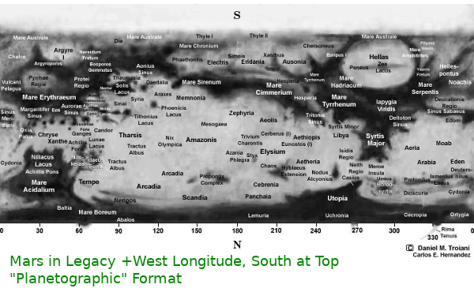
And while we're at it, let's rigidly define North on other planets as whichever pole is closest to the North Ecliptic Pole (near the Cat's Eye Nebula). Actually, it's phrased differently by the IAU. The exact wording is "The North Pole of a planet is that pole of rotation that lies on the North side of the Invariable Plane of the Solar System." Just rolllls off the tongue doesn't it? What could possibly go wrong? Hold my beer.
Cloudy cloudy Venus didn't share the fact that she rotates backwards till it was too late. So, instead of Venus having a North pole tipped way over, her top pole is North-ish. Which isn't a problem until you realise the Sun now rises in the West. Oh joy. East and West don't get switched to fix this because the Compass Rose was settled as a constant. No matter what planet you are on, the Compass Rose is valid. The Sunrise must have got it wrong. (the word East literally means sunrise!) Venus maps are generally Positive East, North up, left to right. If you get it wrong, take a shot and pass the bottle anti-clockwise.
Robots and computers visited Mars and mapped more than any human
being mapped any other place ever in the history of history. Do you
remember how convenient it was to use a telescope to make a Mars map
with Positive West Longitude and South at the top? Not any more.
Satellites orbit Prograde, from West to East, so the Longitudes sweep
past the other way. Positive West gets things backward, and nobody
needs to flip the maps upside down for telescopes any more. The new
hotness for Mars is "Positive East Longitude"!
This
decision irked many scientists, engineers, and astronomers. Just
subtract it from 360 to convert. What could possibly go wrong? Try
not to crash your spacecraft with basic arithmetic. I'm looking at
you 'Mars Climate Orbiter'. "Positive East Longitude" is
also referred to as Planetocentric.
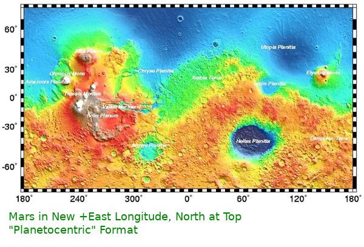
The majority of large moons in the Solar System are tidally locked to their parent body. Many exoplanets probably exhibit this behavior. The natural way to fix this is with the "Thermocentric Coordinate System". The meridian facing the parent is the Prime Meridian. Just like the Earth's Moon. The edge that faces forward as it orbits the parent is +90W. Unless you're using Planetocentric coordinates in which it is +270E. Got that? Great. Throw it all out because Triton orbits Neptune retrograde. Use your trusty Compass Rose. Take a shot, pass the bottle Widdershins standing on your head.
As the photos get better, the coordinates get refined. The Prime Meridian of Mars was first set in the mid Nineteenth century as the center of the fork in Sinus Meridiani; A blurry smudge on a tiny glass plate. Later this was pinpointed as the center of Airy Crater, then further refined as the center of a smaller crater within; Airy-Zero. The Longitude of Mars is now fixed by the position of the Viking-1 lander being +47.95137° West. (+W Planetographic) Don’t forget to convert to Positive East Coordinates! (+312.04863°East ) AAHH!!
Yes, I know. How do you map clouds? Clouds are busy, don’t bother them with questions. The answer is snarly magnetic fields. The "Jovian System III Coordinates" track the magnetic field and are Positive West. This superceded Systems I/II. Read about it somewhere else though.
The Sun has a surface. (sort of) Should we map it? Sure, why not. The Sun is mapped using the Carrington Coordinate System developed in the 1850s. Chart the stellar features with a Stonyhurst Grid and a clock. Then transfer to Carrington. I’m sure it can be generalised for any star. A bit too involved for this essay. If you decide to land on the Sun's surface, be sure to do so at night. For safety.
Computers use XY coordinates for graphics. Maps use Lat-Lon coordinates for locations. These line up perfectly in equirectangular projections. More specifically, in the Plate-Carrée projection. This is the standard image format for planetary texture mapping. Find a map in this format or convert to it and you can display it with any number of 3D rendering applications.
In the last few decades so many small bodies have been discovered and cataloged in such fine detail, the IAU decided to use a non Earth-Centrist system for these numerous mappable mini-worlds. Asteroids, minor planets, Kuiper Belt objects, comets, and moonlets all use The simplified "Right Hand Rule" (RHR). In this system we throw out North altogether. Use your right hand and curl your fingers in the direction of rotation. Now your thumb is pointing to the "Positive Pole". The stars always rise in the East, North is up, and you can still use your perfectly valid compass rose. Longitudes are 0 to +360 East left to right, North is +90, South is -90. Although there are obscure orbit/rotation rates that make it possible for sunrise to take place in the West, the odds are vanishingly remote as tidal forces would overwhelm any such configuration.
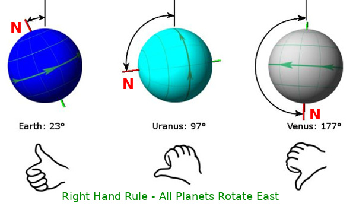
I think it is likely that when we do finally start mapping exoplanets, the +E RHR will be adopted as common sense. Star-rise in the East, North at top, East Longitude 360 degrees from left to right, Prime Meridian wherever you want it. This is consistant, logical, intuitive, and hard to misunderstand. The IAU suggests this in their Cartographic Coordinates Report. (Page 39 item 8) Go make some maps.
Miscellaneous: It is possible for a small body to have such a slow or chaotic rotation that finding a pole is impossible. In such a case, an arbitrary virtual Positive Pole could be established by a beacon set for the purpose. Consider the denizens of Manhattan Island who use an imaginary North set 28.9 degrees East of True North.
While researching this topic, I found another similar article in Wired Magazine by Emily Lakdawalla
So, now we come to the Traveller World Maps and their distinctive Icohex format. If we assume the IAU extends the RHR, then the North (Positive Pole) is at the top. Longitudes increase +East 0-360 from left to right. The Prime Meridian is chosen by whichever governing body administers that world and would be marked by some obvious topological feature or a beacon. Tidally locked worlds might have the prime meridian set to thermocentric standard but are just as likely to choose some more stable and convenient point such as the capitol city or primary transport station.
I had to invent the term "Icohex" as things must have names. I searched. I can find no name for the format anywhere in the game literature. The name I chose is a contraction of "Hexagon Reticulated Icosahedral Dissection" -- -- ("Hexico" sounds too much like a petrochemical corporation that tried to kill Batman)
The earliest printed version I have found is from Classic Traveller Suppliment 12 "Forms and Charts" 1983.
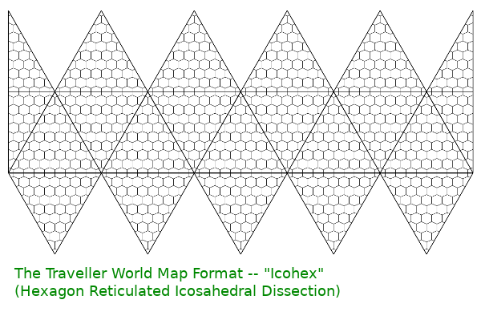
The format is assumed to be a disassembled Icosahedron, and that makes perfect sense. 20 equilateral triangles in that arrangement will obviously fold up into a Platonic Icosahedron. In cartography, this is referred to as a dissection. Although the lack of nomenclature has lead to calling them “Icosahedral projections”, this is misleading. A map projection requires precise and intricate mathematical functions to convert from non-euclidean geospatial coordinates to an XY Cartesian plane. All map projections introduce distortions and dissections while preserving some other aspects of topology; area, distances, proportions, etc. What ought to be preserved in this case?
The hexagon grid is used to generalize location and distance, but has no associated mathematical definition. Although it is stated that the hexagons have a fixed diameter, this is not mathematically possible on the surface of a sphere. This makes the hexagons part of a “reticulation”; a separate overlay used for reference. When grids are mathematically defined, it is a "graticulation".
The Dymaxion Map by Shoji Sadao and B. Fuller is often cited as the projection. Although both are dissections of iocosahedra, The "Dymaxion Airocean World Map" published by Raleigh 1954 is very specific in its interruptions. The vertices are incompatible with Traveller's function and the compass rose is ignored. The inverse projection maths necessary to use Fuller's constant scale great circles is just not worth the effort. Cartographers abandoned the concept long ago. I understand your disappointment. Dymaxion is such a great name. It sounds like the brand of condoms Superman uses.
The Traveller maps do not show Latitudes or Longitudes; this makes reverse engineering the matrix functions impossible. There are several ways to project a sphere onto a polyhedron, two reasonable options for our purposes are; Gnomonic, and Cylindrical.
Cylindrical projections preserve Latitudes and Longitudes as straight lines.
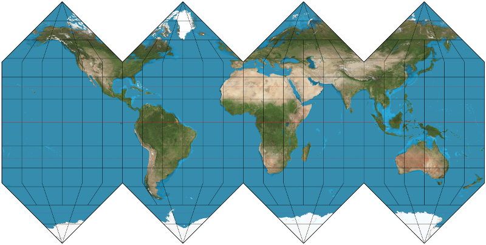
Gnomonic projections preserve Great Circles as straight lines.
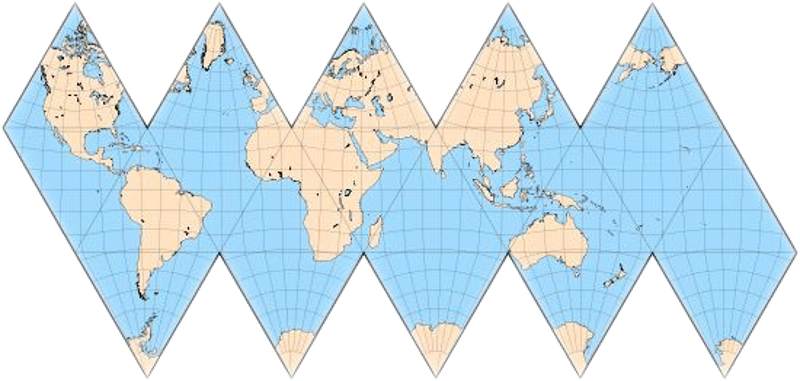
Both approaches are equally valid. The visual differences are
subtle. Neither has any aesthetic disadvantage.
Free software
converters exist for both. Here is a Traveller World Map using Right-Hand-rule Standards.
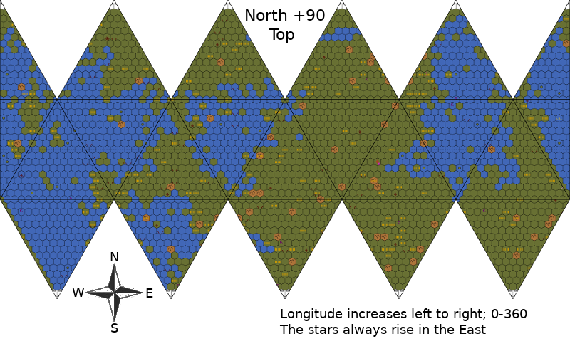
When converted back to Plate-Carrée, both choices produce realistic planets.
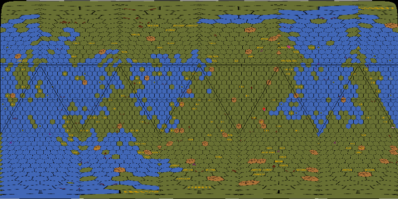
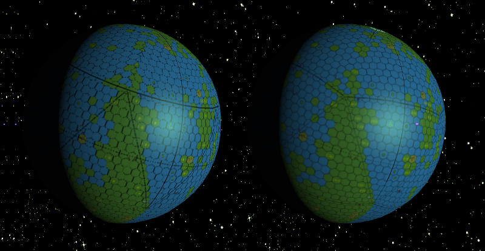
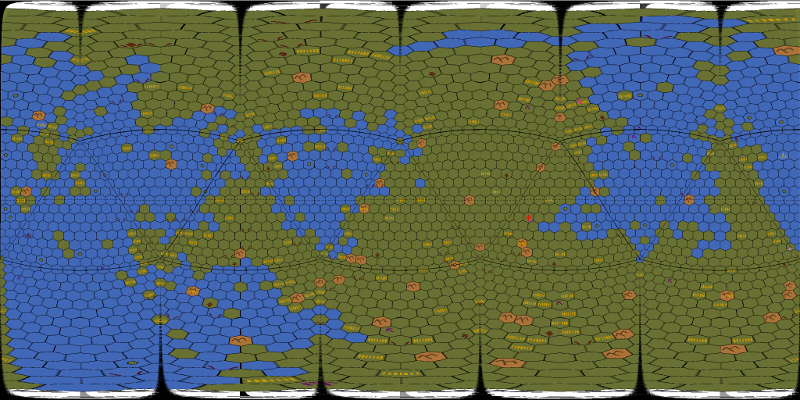
The Traveller World Maps can be generated at Jonathan Sherlock's page
The Cylidrical converter was written by Joshua Bell
The Gnomonic converter links to a Traveller World Viewer
How the Traveller World Map format relates to historic examples
-- Morfydd James
Maps based on polyhedra are not a new idea. The first recorded description we have is from The "Codex Atlanticus" written by Leonardo da Vinci in 1508. Leonardo uses a Platonic Octohedron to dissect the globe into 8 parts. He shows the equilateral triangles reassembled as a pair of lovely rosettes.
Christopher W. Tyler writes about Leonardo's world map in "Cosmos and History: The Journal of Natural and Social Philosophy" (vol. 13, no. 2, 2017)
Nicolas van Geelkercken, a Dutch journalist, printed da Vinci's projection in a more familiar arrangement in 1616.
Leonardo's Map 1508
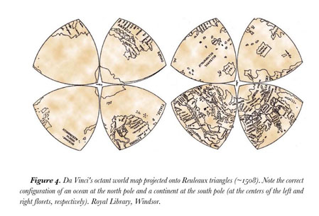
Nv Geelkercken's print 1616
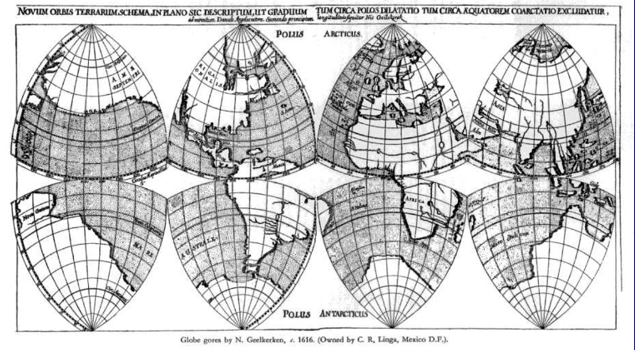
Buckminster Fuller patented his Dymaxion Map in 1946. Mr. Fuller reused the term Dymaxion numerous times for unrelated products and never provided a definition. Notice that the patented Dymaxion is a Cube-Octohedron, not the more famous Platonic Icosahedron. The Dymaxion you are probably recalling is
the "Airocean World Map" published in 1954. (created by cartographer Shoji Sadao)
Dymaxion featured in Life Magazine (1 March 1943)
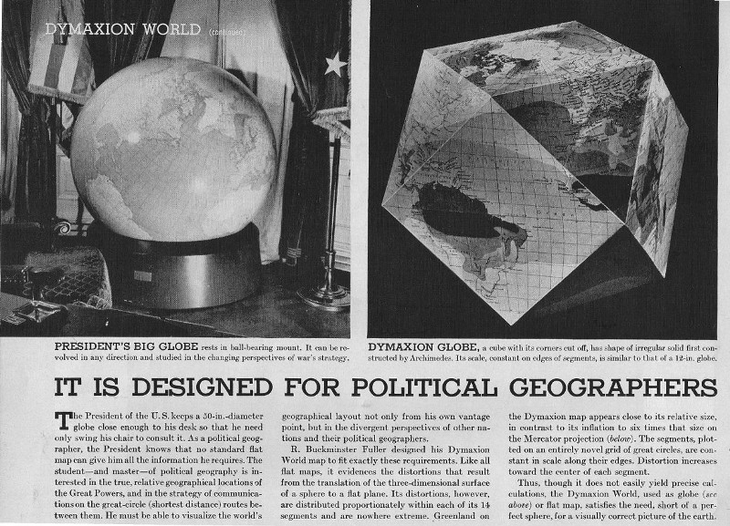
"Airocean World Map" by Shoji Sadao 1954 (Raleigh ed)
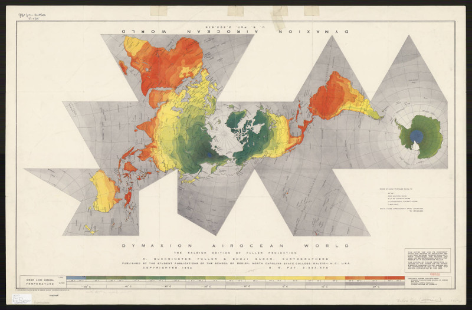
The notable property of this projection was not its shape but its novel method of projecting the spherical triangle to a flat surface. In the standard Gnomonic Projection, Great Circle segments (the edges of each triangle) are preserved as straight lines with variable scales (The nautical miles along the line stretch and shrink). In this new concept, they are straight lines of uniform scale (although no internal arcs share an identical ratio).
Gnomonic and Dymaxion projections are overlaid below for comparison
Constructed by R.W.Gray. The differences are minute.
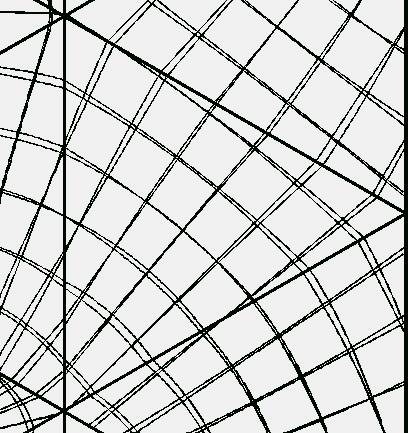
This projection has been retroactively termed "Constant Zenithal Projection".
In 1954, the process was done entirely by hand using compass and straight edge on a draughting table by Sadao. It wasn't until the 21st century that the maths were indisputably worked out. No practical application was ever found for this projection so it was abandoned by cartographers long ago.
A more direct ancestor of the traveller world map was patented in 1943 by Yale economist Irving Fisher. The map is described in the journal,
"Geographical Review" (v_33 no_4 p.605-619).
"A World Map on a Regular Icosahedron by Gnomonic Projection". Mr. Fisher's map was featured in an article of the New York Times (3 Oct 1943 p.9) It is notable that this published map predates Fuller's patent by 3 years and the Airocean by 11 years.
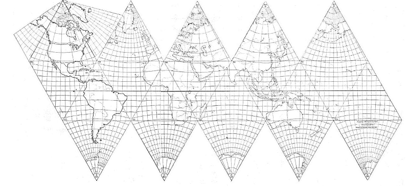
This is The Traveller Map form from
Classic Traveller Suppliment 12 "Forms and Charts" 1983.
This form is based on GDW's previously published inserts sent to subscribers.
Designed by Marc W. Miller
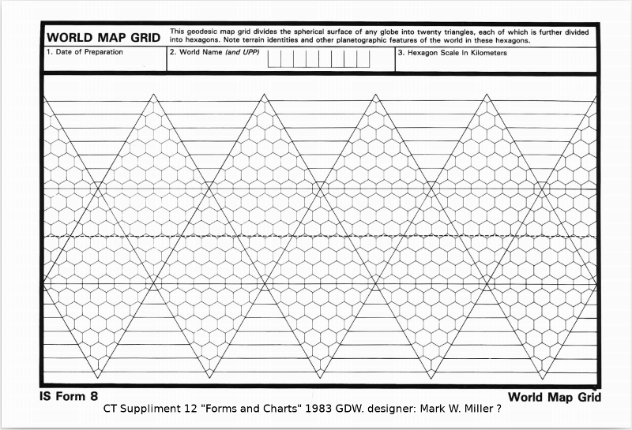
Other earlier maps printed for Traveller exist in various publications. Probably derived from GDW's Original magazine inserts.
1980 Little Black Book Double Adventure 2: Across the Bright Face/Mission on Mithril
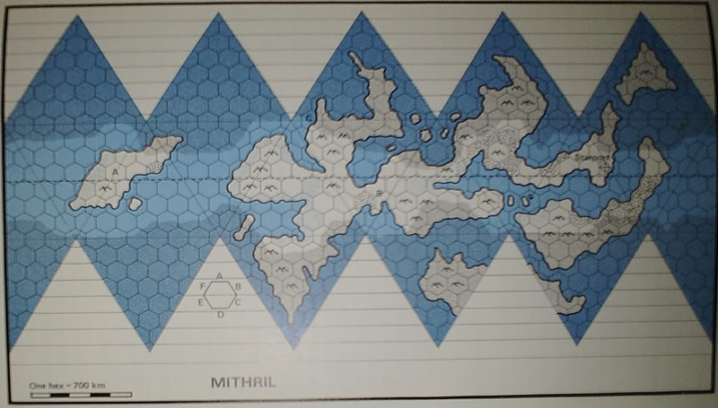
From the same?
Note at the bottom right that planet rotation and East are in agreement.
also, is that a hexagonal Compass Rose? Perfectly valid.
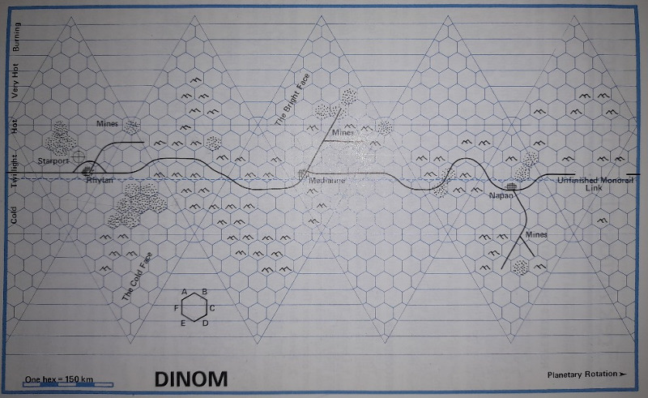
Group One Games 1980-1981
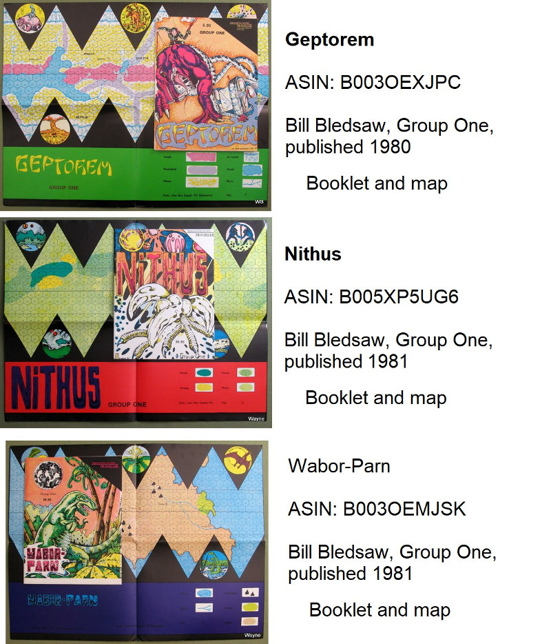
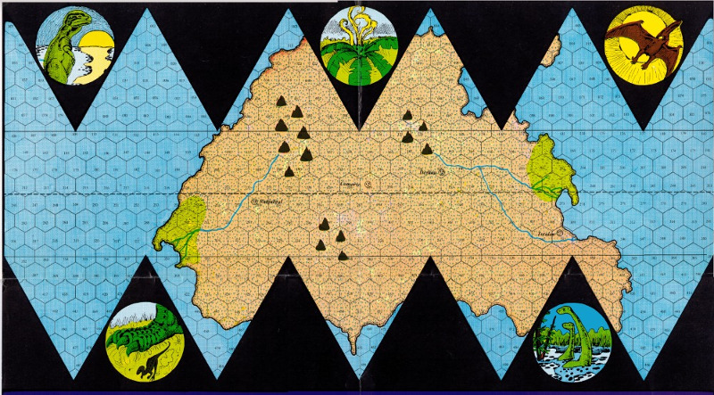
This map is particularly interesting. The creator has taken the trouble to calculate the latitudes for each row of hexes. Also specified is the direction of rotation. (retrograde) The Compass Rose in the upper left is valid. East is to the right of North.
Classic Traveller Module One (1980) - "Tarsus: World Beyond the Frontier".
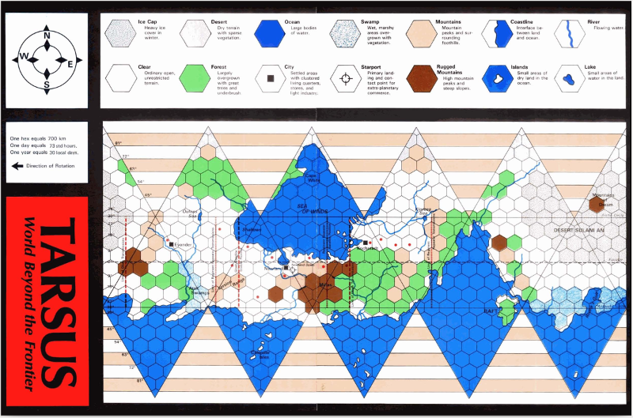
A different approach was an ortho-polar projection for very large areas of a planet.
12 shared Hexes girdle the Equator while 7 cover each pole.
Published in The "Journal of the Travellers Aid Society" #05 1980 (pages 17-24)
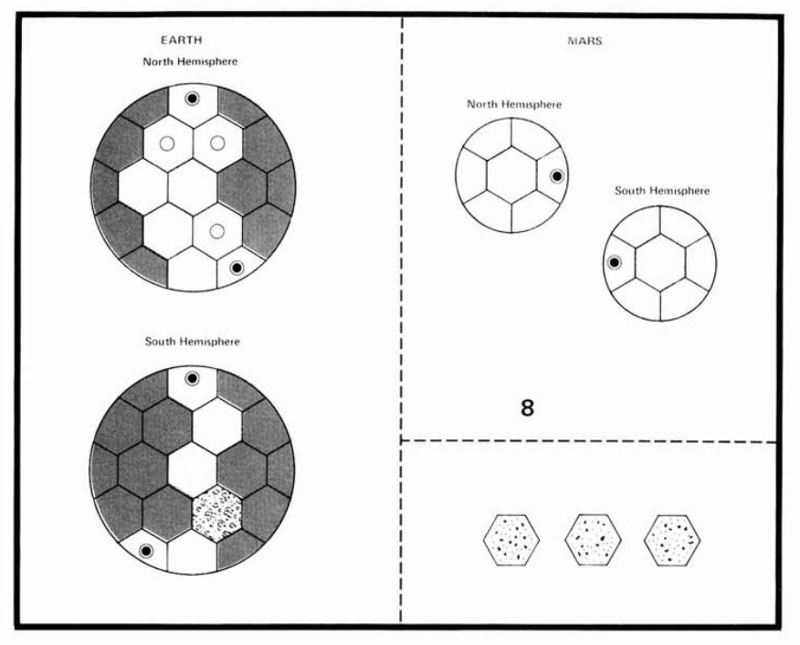
Thank you for reading all the way to the end. Here is a bonus.
The 4 Cardinal Winds (NESW) have mostly been replaced by finer 360° graduations.
Here's a quick and easy way to remember the variations:
| A Salty Sea Captain: | 32 Points ("Arrr!") |
| In the Napoleonic Artillery: | 400 Grades ("Sacré bleu!") |
| An Engineer: | 6.2818 Radians (Slacker) |
| A Mathematician: | 2 PI Radians (Snob) |
| A Marksman: | 6282 Mils ("Missed me!") |
| In NATO: | 6400 Mils (OTAN) |
| In the Warsaw Pact: | 6000 Mils ("P*t*n Xuilyo!") |
| In Sweden: | 6300 Streck (ABBA?) |
If you sailed before the magnetic compass was available, The winds were your master.
| Boreas | (N) |
| Meses | (NNE) |
| Caecias | (NE) |
| Apeliotes | (E) |
| Eurus | (SE) |
| Phonecias | (SSE) |
| Notos | (S) |
| Leuconotos | (SSW) |
| Lips | (SW) |
| Zephyrus | (W) |
| Argestes | (NW) |
| Thrakias | (NNW) |
| Tramontana | (N) |
| Greco | (NE) |
| Levante | (E) |
| Scirocco | (SE) |
| Ostro | (S) |
| Libeccio | (SW) |
| Ponente | (W) |
| Maestro | (NW) |
Portalan Chart of the Black Sea showing Wind-Rose and course plots.
Agnese Batista (1552)
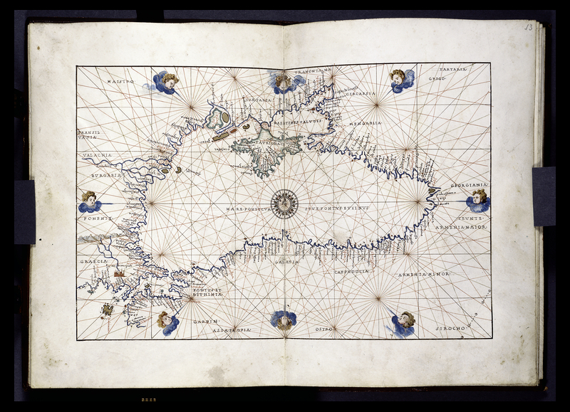
Original WashPost article on Portolan charts: https://www.washingtonpost.com/wp-dyn/content/article/2010/05/21/AR2010052104713.html
The Snyder equal-area projection is a polyhedral map projection used in the ISEA (Icosahedral Snyder Equal Area) discrete global grids. It is named for John P. Snyder, who developed the projection in the 1990s. It is a modified Lambert azimuthal equal-area projection, most often applied to a polyhedral globe consisting of truncated icosahedron with 32 same-area faces. (source unknown)
The Chamberlin trimetric projection is a map projection where three points are fixed on the globe and the points on the sphere are mapped onto a plane by triangulation. It was developed in 1946 by Wellman Chamberlin for the National Geographic Society. Chamberlin was chief cartographer for the Society from 1964 to 1971. The projection's principal feature is that it compromises between distortions of area, direction, and distance. A Chamberlin trimetric map therefore gives an excellent overall sense of the region being mapped. Many National Geographic Society maps of single continents use this projection. (source unknown)